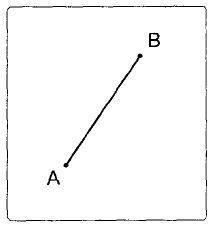
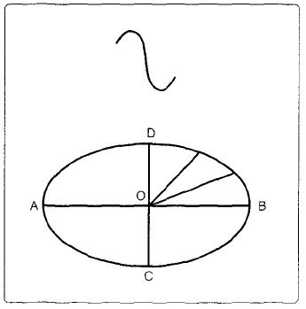
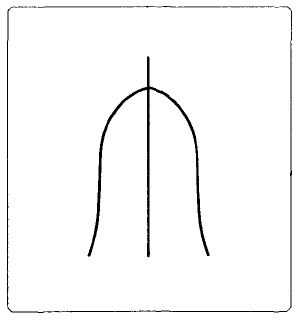

Беседа 2589 от 3877 · Беинса Дуно
Прави и криви линии
„Отче наш“
Пишете върху темата: „Геометрическата зависимост между правите и криви линии“.
Ако човек винаги яде чорби, т. е. меки храни, ще си развали зъбите; ако се храни само с твърда храна, ще ги строши. Ако човек разрешава най-лесния въпрос, има опасност да му изпадат всичките зъби; ако разрешава мъчните въпроси, зъбите му ще заякнат, но той трябва да ги пази да не ги строши, да не ги натисне повече, отколкото трябва.
Каква е темата от миналата лекция? – „Силата на човешката мисъл“. Четете. (Прочете се темата)

Сега, геометрически как се определят кривите линии? Кривата линия е сбор от прави линии. Вземете един център, от който излиза една права линия, и придвижете тази права около центъра – образува се крива линия. Защо при движението на права около център се образува крива линия? Нали казват геометриците, че ако една права линия се продължи във вечността, тя ще се срещне. Ако продължите две успоредни прави, във вечността те ще се пресекат, т. е. ще се приближат. Ако движението върви от точка В към точка А, ще се приближат ли? Правите, които могат да се срещнат в центъра по този начин, успоредни ли са? При обикновеното механично разбиране, причината, която движи две успоредни прави, е външна и тогава вътрешното отношение между тях няма да се измени. Но да допуснем, че влиянието на тези успоредни линии се пренесе върху самите тях. Представете си, че около една права линия се образува крива (защото само около правите се образуват криви). Кривите линии, които се образуват около правите, ще приближат разстоянието. Тогава успоредните прави могат външно да се приближат.
Сега, когато вие вървите, кое ви кара да се приближите при един извор или при един човек? Например, не обичате даден човек, казвате: „Дръж се настрана от него!“, но един ден във вас се зароди желанието да се приближите. Кои са мотивите, за да искате да се приближите? Два мотива има: този, че го обичаш или този, че го мразиш. Когато го обичаш, ти ще се приближиш. Когато го мразиш и ти си по-силният, пак ще се приближиш. Ако той е по-силният, той ще се приближи, за да ти покаже, че не трябва да имаш работа с него, че той е господар на положението, а не ти. Как мислите, кой е по-силен – който се приближава или който се отдалечава? Този, който се отдалечава, е съобразителен; този, който се приближава, е смел. Който се отдалечава, заема позиция, очаква.
Сега, ако придвижите правата АВ около центъра А, ще се образува крива линия. Какви ще бъдат нейните свойства? Всичките й точки са еднакво отдалечени от центъра. Тези линии математически каква дължина имат? Но представете си, че линиите имат еднаква дебелина (колкото и да е малка, те имат дебелина). Ако се вземат безброй прави линии като този радиус, центърът сам по себе си нали ще заеме известно пространство? Тогава какви ще бъдат неговите свойствата? Щом едно тяло заеме колкото и да е малко пространство, какво заключение може да се направи? Щом телата са безпространствени, те нямат влияние във физическия свят. Ако едно тяло съществува извън пространството, казваме, че е безпространствено. Обикновеното физическо пространство наричаме триизмерно. Има и четириизмерно пространство. И в четириизмерното пространство пак можете да правите наблюдения. Например, човек казва: „Потъвам някъде“. Никъде не потъва. Или пък казват за някого: „Издига се този човек“. Как се издига? Има нещо в него, което се издига; има нещо, което потъва. Ти не можеш да видиш неговото издигане. Например, казват: „Той се издига в обществото“. Физически колко се е издигнал? Друг път казват: „Потъна, съвсем изгубен е вече“ или „Този е изгубен“, или „Този го намерихме“. Той никога не се е изгубвал и никога не е бил намиран. Всеки, който мисли различно от вас, е изгубен. „Изгубеният“ е влязъл в друга система, движи се като комета, привлечена от някое слънце. Този човек е изгубен за системата, от която е излязъл и в която хората живеят. Понякога мислите ви така се изгубват. Друг път казвате: „Еди кого си не го обичам“. Как тъй, защо не го обичате? Това означава, че чувствата ви са минали в някоя друга система.
Сега, да дойдем до физическия свят, който е свързан с органичния. Представете си един предмет, чиято магнитна сила е единица, и друг предмет, десет пъти по-силен. Да допуснем, че предметът със сила единица привлича една игла, но ако насочите магнитът, който е десет пъти по-силен, иглата ще остане ли на първия магнит? Не, привлича го притегателната сила на втория магнит, която е по-голяма. Добре тогава, нека разсъждаваме философски: защо обвиняват крадеца, когото една пълна каса е привлякла, а пък той е привлякъл парите в своя джоб? Богаташът е привлякъл парите, турил ги е в касата, иде този апаш, туря си ръката и всичките пари се привличат към него. Тогава защо го обвиняват и как ще обосновете наказанието? Какво представлява наказанието в дадения случай? Оставете моралното схващане, че е направил нещо лошо. Апашът турил ръката си, привлякъл парите, а съдът го съди за това, че намагнитизирал с десетократно по-голяма сила парите и ги привлякъл. Следователно, когато го турят в затвора, богаташът взема неговата сила и апашът остава с единица сила. Силата на богатия се увеличава, защото силата от апаша отива в него. Ако не хванат апаша, богатият започва да се опасява, че и друг ще го ограби. А щом банкерът вземе от всички апаши силата да крадат, той има десет единици сила и парите ще останат при него.

Сега, как си обяснявате закона, че правите линии образуват кривите? Да кажем, че имате една крива линия, която е образувана от прави. Когато правите линии се удължават и скъсяват, кривите линии изменят своя път. Когато кривата линия се придвижи в една посока, едни от правите се скъсяват, други се удължават. Ако в елипсата вземете двата й фокуса като полюси, тогава къде е екваторът? А и В са полюсите, а екваторът е СД. Ако вземем за отправна точката О, то линиите, отиващи към полюсите, са по-дълги и колкото се приближават към екватора, повече се скъсяват. Защо се скъсяват именно тия прави? Тази зависимост произлиза от този център О. Същевременно и елипсата се движи, в следствие на което правите линии на екватора се скъсяват, докато кривата линия на полюса се стеснява, а на екватора се удължава. Тогава как обясняват защо Земята към полюсите е сплесната, а към екватора е изпъкнала? Центробежната сила е по-голяма, затова става това. Сега, ако аз движа един предмет, например движа един камък, къде е центробежната сила? Тя е в самия камък и се явява по посока на тангентата. - Накъде е движението? Коя е причината на това движение? То е разумно, то не може да бъде механично. Движението на Земята е механично, но се обуславя от един разумен център. Следователно Земята е изпъкнала на екватора, защото радиусите й там са удължени, а на полюсите са по-къси.
Сега, ако разгледаме човека, кои са били причините, които са го удължили? Да кажем, че главата е центърът. Тогава тялото е спуснато надолу, а главата горе е свободна. Следователно главата, като център, се носи от тялото. От какво зависи главата да се постави в посока, противоположна на краката? Човек е една елипса. Къде е екваторът на човека и защо не е по-изпъкнал? Да вземем сега човешката глава, която е издължена. Къде е екваторът й? Главата е елипсовидна – дължината й (височината) е 19, 20, понякога – 21 сантиметра, а широчината е 15-16 сантиметра. Поясът около ушите е екваторът. Значи човек е сложна елипса и се състои от четири преплетени елипси. Това, което теософите наричат физическо, Астрално, Ментално и Причинно тяло, това са вещества от различни измерения. Физическото тяло е триизмерно, Астралното тяло е четириизмерно, Умственото е петизмерно и Причинното е шестизмерно. Това значи, че материалите са от съвсем различен състав. Следователно имате три центъра. Стомахът се намира в противоположност на мозъка. Симпатичната нервна система е в противоположност на централната нервна система и цялото тяло от главата надолу е под нейно влияние. Централната, мозъчната нервна система се е явила отпосле. Симпатичната нервна система е подготвила нейния път, защото мозъчната система е от по-висок свят. Следователно симпатичната нервна система е създала тялото, а после мозъчната нервна система е създала главата и сега тя взема властта. Единствено мозъчната система ще измени човека. В бъдеще човек ще има по-друг образ, отколкото сега...
Това, което сега излагам пред вас, все ще образува някакво напрежение. Представете си, че един човек притежава изкуството да хвърля ножове около друг, който е изправен пред една дъска. Този започва да хвърля ножовете, забива ги около главата – до ухото, отгоре, отстрани. Кой има по-голяма вяра – онзи, който хвърля ножовете, или онзи, който вярва, че те ще бъдат хвърлени на място? Вие как мислите, кой има по-голяма вяра – който хвърля или който седи на дъската? – Който седи на дъската има по-голяма вяра. Онзи, който е на дъската, вярва в онзи, който хвърля ножовете. А онзи, който хвърля ножовете, в кого вярва? Той ще каже на партньора си: „Ако се мръднеш половин-един сантиметър, работата е опасна!“ Ще кажем, че той вярва в себе си. Но в кое „себе“ ще вярва той и какво подразбира да вярваш в себе си? Например, човешкият ум вярва в човешките крака, вярва в костите. В какво вярвам аз, когато искам да вървя? Вярвам в краката. Когато искам да гледам, вярвам в очите си. Аз, човекът, вярвам в моите очи, възприемам тази светлина. Тази светлина иде отвън. Значи пред себе си имам светлина, която е една разумност извън нас и с която ние сме свързани. Когато тази разумност се прояви, като че ли се проявява известно отношение и щом влезе тази светлина в очите, приятно ми е. Следователно, аз се споразумявам с това, силното, което праща светлината, и между мен и него ще се образува връзка. Друг път пък светлината не ми е приятна и тогава гледам да я възприемам по-малко.
Та казвам сега: в сегашния живот ние сме израснали достатъчно. Вие сте израснали, но мерите със старите мерки и разсъждавате много по старому, разсъждавате както животните. Една котка разсъждава математически и когато иска да хване една птичка, тя измерва разстоянието. Има диви котки, които измерват пет-десет метра и се хвърлят точно върху гърба на жертвата. Как изчисляват да паднат точно върху гърба? И човек както котката е направил взривни вещества, турил е мерник, измерва и гледа бомбата да падне точно на мястото на неговия неприятел. По какво се отличават котката и този индивид, който хвърля бомбата? Как изчислява той и как изчислява котката? Ами че котките са предали оръжието на своето поколение. Малкото коте още на една година знае както майка си да измерва и да се хвърля върху жертвата. То няма още достатъчно сила за скок на голямо разстояние, но може да се хвърля точно на място. По същия начин и онзи, който е направил пушката и разбира нейните законите, вдигне, тури мерника и куршумът точно на място отива. Ако дойде някой невежа, той няма да постави мерника на място и няма да улучи.
Та казвам: вие разсъждавате за Доброто, за добрите отношения, но нямате една ясна представа какво нещо е добро отношение. Говорим за права мисъл, но нямаме представа какво нещо е правата мисъл. Някой казва: „Аз зная какво е правата мисъл“, но няма една ясна представа. Каква е правата мисъл? Например, аз считам, че човек, който си е платил дълговете спрямо мен, е прав. Ни най-малко не е прав. Той има да дава на един беден човек, но има да дава и на някой богат и понеже е в зависимост от последния, плаща на него, а на бедния казва: „Ти ще чакаш!“ Права ли е такава мисъл? Банкерът казва за някого: „Той е честен човек, има кредит“. Понеже е умен човек, той му дава пари, а на бедния казва: „Имам да вземам и когато ми дадат, и аз ще ти дам“. Правата мисъл не трябва да бъде в зависимост, тя трябва да бъде свободна. Семето трябва да стане зависимо, само когато падне в почвата, а когато е в хамбара, то трябва да бъде свободно, независимо от влагата, за да не се поквари. Ако влагата влезе в хамбара, нищо няма да се постигне. Не може да има влага в хамбара. Понякога вие искате да обичате някой човек. Имаш ли право да обичаш някого в хамбара? Кажете ми имаш ли право да обичаш житото в хамбара? Каква полза могат да ви причинят двама души, които ви обичат? Казвам: освен че няма да ти причинят никаква полза, но те ще те развалят – единият тегли насам, другият тегли натам.
В реалните неща има само едно отношение, което е център. Центърът образува всичко – образува правите линии, образува плоскостите, образува всичко в света. Всичко зависи от центъра. Движението на центъра, който образува правата линия, е само в една посока. В плоскостта центърът се движи едновременно в две посоки, а в тялото той се движи едновременно в три посоки. Следователно движението в правата линия е по-слабо, в плоскостта се увеличава, а в тялото е увеличено три пъти. С други думи, силата се развива: в правата линия е единица, в плоскостта е в квадрат, а в тялото е кубична. Това определение ще влезе в разрез с вашите разбирания, но в геометрията има увеличаване на физическата сила и увеличаване на нервната, разумна сила. В човека има отношения, но те се различават. Например, ако човек става физически силен, той огрубява. Ако се развива неговата чувствителност, явяват се страданията. Страданията в нас са едно анормално развиване на чувствителността на човека и тогава се явява напрежение в мисълта. Ако пък се увеличава силата на мозъка, тогава се усеща едно напрежение и разширение. Следователно, за да се избави от грубостта на физическото поле, човек трябва да намали силата, а за да се избави от страданията, трябва да намали чувствителността. Тук не разбирайте притъпяване на чувствата. Човек трябва да разбира закона на това болезнено състояние, да го разшири на една широка площ. Например, боли те пръста, ти чувстваш болката и не можеш да търпиш. Но ако се яви по-голяма болка, тогава ти забравяш малката, мислиш за голямата болка. Ако голямата болка се премахне, болката в пръста пак ще се яви. Щом и тя се премахне, тогава ще мислиш за някоя малка фуска. Човек трябва да разбира законите: големите болести сменят малките. Но какво се ползваш, ако една голяма болест смени малката? Всяка една болка в света произтича от един по-нисш живот. А когато един по-нисш живот влезе в организма ти, той образува болест. Ако един по-висш живот дойде в теб, той внася здраве. Сега лекарите казват, че храна с нисши трептения не е хранителна за организма. Онази храна, която не е нагласена да има същите трептения, както организма, не е в състояние да влезе в неговото устройството и тогава се образуват известни анормалности.
Сега, вие страдате и не знаете защо. Казвате: „Защо ми са тези страдания?“ Ще ви запитам тогава защо ви са радостите. Аз мога да ви докажа, че една радост може да ви излезе много горчива. Представете си, че в съвременния живот един беден човек се моли за щастие, иска да му се паднат пари. Минава един апаш, когото гонят, дава на бедния човек една пачка с банкноти и му казва: „Услужи си с тях!“ Това благо на място ли е? Това щастие ли е? Как този човек ще се оправдае, че парите не ги е откраднал той. Та и ние, съвременните хора, често имаме щастие, произтичащо от такива банкноти. Не вземай тия банкноти, в това няма никакво щастие! Туй щастие ще бъде нещастие за вас. Сега вие търсите щастието, което носи нещастие със себе си. Не че парите са нещастни, но отношението на тия пари не е право. Вие искате някой да ви обича, да ви даде пачка с пари. Защо ви са тия пари? Кажете ми сега кое е по-хубаво – да ви дам десет милиона лева или да ви дам една идея без пари? Да ви дам една идея, например едно лекарство, което лекува всички болести, или да ви дам един милион лева? Кое бихте предпочели? Когато влезете при двама болни богаташи и ги излекувате за по петстотин хиляди лева, ето ви един милион.
Та и ние често искаме от Природата да ни даде пари. Не, искайте една лечебна идея, от нея ще спечелите повече пари, отколкото са един милион лева. Понякога вие искате да бъдете добри – искате да бъдете богати, че да давате. Не искайте богатство. С него добро не може да правите. Богатството трябва да дойде отпосле като резултат. Сега, при това положение, при което сте вие, какво ви трябва? Трябва ви вяра. Казва някой: „Да имаш вяра“. Ще ви дам едно пояснение: представете си, че разчитате на един ваш приятел, който е маг – знае привичките на тигрите, лъвовете, змиите, на всички опасни животни. Допуснете, че той ви поставя на един изпит: пуска ви при лъвовете, но е нагласил така, че зверовете само да ви близнат с език. Вие чакате, всички лъвове идат отгоре ви, наближават до един метър. Какво ще правите в дадения случай? Казвате: „Ще се моля“. Щом се молиш, това е една слабост в теб. Не, ти ще вярваш. И когато се приближат зверовете, ти ще седиш спокоен, като че нищо не могат да ти сторят.
Сега, всичко това е на теория, но какво ще бъде твоето действително състояние? Най-първо ти ще си кажеш: „Изложи ме този човек, тази работа тук как ще я бъде!“ И ще започнеш да мислиш за начин, по който да се избавиш от лъвовете. Да допуснем, че в дадения случай вие сте една птица, която има крила. Какво ще правиш? Издигнеш ли се над тях, ти разрешаваш сам въпроса. Да, разрешаваш сам въпроса, но нямаш вяра в приятеля си. Сегашните хора имат ли вяра в Природата? Не, имат вяра само в туй, което те знаят. Затова всички вярвания са ограничени. Хората вярват повече в парите, които имат в банката, отколкото в своите приятели. Ти вярваш повече на онова здраве, което имаш, на онази мисъл, която имаш в себе си, отколкото на онова, което хората имат. И това е право. Та питам сега какво е основното качество на вярата? – Тя се отнася до човешкия ум. Ти не знаеш, че твоят приятел е казал на всички зверове да дойдат и всеки да те близне малко с език – лъвовете ще отворят уста, няма да те захапят и ти ще се чудиш какво искат от тебе. Те искат само целувка. Но ти не знаеш какви ще бъдат резултатите и докато ги опиташ, в теб изведнъж ще се образува една пертурбация. Когато разбереш после истината, ще ти стане приятно и ще кажеш: „Той накара косите ми да настръхнат малко!“ Всички вие се намирате при тия условия в света и когато се опитва вярата ви, вие се приближавате при лъвовете. Лошите условия са зверове, които се приближават при вас.

Та питам сега в какво седи силата на човешката мисъл? В нейната правота. Тази мисъл трябва да има една основа, трябва да има правота и да се движи около един център. Някой казва, че е изкривил пътя си. Не, кое е лошото в това, че пътят се отбива вляво или че се отклонява вдясно. Какво означава „в ляво“? Да се отклониш вляво означава, че са взели надмощие чувствата, а да се отклониш вдясно означава, че надмощие е взела силата, а силата е свързана с човешкия ум. Следователно, ако в даден случай ти се движиш по права линия, това е хармоничното влияние на човешките мисли и чувства. За да вървиш по права линия, изисква се хармония на твоите мисли и чувства. Това е Правият път. Под Прав път се подразбира човек, който мисли право и чувства право, т. е. прав е и в чувствата, и в мислите. Така трябва да се разбира. Щом чувствата управляват, човек е на крива посока. Щом мисълта му вътре го управлява и произвежда налягане върху чувствата му, това пак е погрешно положение. Защото в човека мисълта не може да бъде съвършено независима от чувствата, а чувствата не могат съвършено да се освободят от мисълта. В животните преобладават чувствата така, като че мисълта не ги управлява, но у тях мисълта е външна. А когато един човек стане господар на своите мисли, туй подразбира, че чувствата са станали хармонични с тях. Някой път те залае куче и ти веднага изгубваш спокойствието си, навеждаш се, вземаш камък и го нахвърляш отгоре му. Кое е най-доброто, което можеш да направиш в дадения случай? Извади парченце геврек, хвърли му и кажи: „Пожелавам да те освободят от това положение!“ А сега в теб идва едно гневно състояние, започваш да играеш ролята на вързано животно и казваш: „Не искам да живея, искам да умра!“ Как ще умреш, ти умирал ли си? Вие не знаете какво нещо е умиране. Ако си свързан с въже, прегризи го.
Та казвам: правата мисъл разрешава всички прави отношения, които трябва да имаме в тесен и в широк кръг. Всякога трябва да развивате едно от качествата на правата мисъл. Не бързайте да обещавате нещо, но веднъж обещаете ли, изпълнете го. Когато обещавате, гледайте да не сте раздвоени. Щом сте раздвоени в себе си, онова, което обещавате, няма да го изпълните. Щом обещаеш нещо и си раздвоен, няма да го направиш, затова не се излагайте.
Понякога ние искаме да ни направят нещо, което е извън силите на човека пред нас. Може да е малка работа, но какво ще се получи, ако задължа един професор да ми направи обуща? Човекът е много учен, но никога не е правил обуща, а аз искам от него нещо, което не може да направи. Професорът може да ти поръча обуща при някой обущар, но ако го задължиш сам да ти направи, той ще каже: „Тази работа не е за мен“. Така и някой иска от нас да бъдем добри. Какво разбира той под думата „добри“? В някои случаи ти не можеш да бъдеш добър. Например, ако ви ухапе едно куче, вие ще бъдете ли добри? Истината е, че няма да бъдете добри.
И така, казваме, че правата линия може да образува криви линии. Но кривите линии могат ли да образуват прави? Кривите линии са резултат на правите, а последните са резултат на движещ се център. Плоскостта е резултат на една движеща се права, тялото е резултат на една движеща се плоскост. Та казвам: физическият свят може да ни стане ясен, когато го приложим в Живота. Например, понякога имате желание да бъдете учени. В какво трябва да бъде учен човек? Един математик, който има на разположение десет числа, знае как да манипулира с тях и къде да ги тури, може да изчислява. Сега, допуснете, че имате десет приятели, които са числа. И вие като този математик трябва да разбирате закона, да знаете в дадения случай всяко едно живо число какво може да направи, на какво можете да разчитате. Например, имате един приятел, но нямате ясна представа доколко можете да разчитате на него. На честността на човека доколко можеш да разчиташ? Съществува човек, който е честен до сто, двеста, хиляда, сто хиляди лева, но като дойде до повече от сто хиляди, честността му започва да се колебае. Има някой, който е честен до един милион, но като дойдат вече до десет милиона, честността му се колебае. Някой казва: „Остави стотинките!“ Не, Природата обича точността. Една десета част от стотинката е нищо, но една десета от милиона е много. Да бъдеш справедлив значи да не подяждаш човека даже с половин стотинка.
Какво е една обида? Някой ти казва грубо: „Иване!“ В какво седи тук обидата? После казва нежно: „Иване!“ Каква е разликата? И в единия, и в другия случай казва все „Иване“, но кое обижда? Едното е музикално, другото не е музикално. Ако аз съм човекът, който обижда, аз вече съм обидил себе си, защото произнасяйки думата грубо, най-първо съм огрубил себе си. Когато взема неправилен тон, аз огрубявам себе си. Всякога произнасяй нещата музикално, та каквото кажеш, да е с по-малко разноски. Ние сме учени хора, но не разбираме отношението на енергиите, не знаем как да ги управляваме. Какво ти коства да говориш нежно? Някой казва: „Аз не мога да го направя“. Какво ти коства да кажеш „Иване“ нежно, меко? Под думата „Иван“ разбираме правилна посока на движение. „Иван“ показва пътя, начинът, където нещата могат да станат много добре. „Иван“ още показва по кой начин товарът може да се пренесе от едно място на друго. „Иван“ показва същевременно и противоречията, които могат да се разрешат. Следователно, под думата „Иван“ разбираме правата посока на движение, после, пътя, по който нещата могат да станат много добре, после, начинът, по който мъчнотиите могат да се понесат най-разумно. Това разбираме, като кажем меко: „Иване!“ Когато кажем грубо: „Иване!“, разбираме, че тази работа няма да стане. Всякога, когато говорим меко, в меката светлина расте растителното царство. Грубото е нещо външно, странично, то е изключение. По някой път в Природата има грубости, с които тя ни предава нещо, едно предметно учение са те. Когато ние сме груби, и тя става като нас и пита: „Кое е по-хубаво говорене – когато говориш меко или когато говориш грубо? По-хубаво е да бъдеш мек. И за вас е по-добре да бъдете меки. Ако моите отношения са меки, и за вас законът е същият“. Чрез грубите неща Природата ни учи да бъдем меки.
Колко важни неща има сега? В какво седи правата мисъл? Разбира се, върху този предмет още нямаме опит. Трябва да се направи един опит. Миналия път казах на класа да се съберат десет души, да намерят един лотариен билет и да видят дали ще спечели. Съберете се десет души и един да каже: „Този номер вземете“. Може да изгубите, няма нищо. Втори посочва друг номер – вземете него. Трети, четвърти, пети... Ако от десетте номера един печели, ще знаете, че този човек е учен. Ако всинца не печелите, всинца сте под еднакъв знаменател. Защото за какво ми е знание, което не може мен да ползва? Има лекари, които не могат да лекуват себе си. Един човек трябва да знае да лекува себе си. Ако знанието не може да ми помогне в големите мъчнотии, защо ми е това знание? Ако на силата, която имам, не мога да разчитам в усилни времена, защо ми? Тя е безпредметна, тя е външно украшение.
Сега, какъв опит искате да направите? – Да вземем няколко числа и номерът на единия билет да печели. Добре, имате число 1578. Как мислите, туй число печели ли? Туй число не може да печели, понеже първите две и вторите две числа са в стълкновение. Ще кажете, че така е наредено от Господа. Има особени съчетания на числата. Сега аз не мога да ви кажа кои числа печелят, защото мога да внеса противоречие във вас.
Хармонията е разбиране. Да ви изпея една хубава песен е трудно, но да ви покажа дисхармонично пеене мога колкото искате. Да пеем криво можем колкото искаме, но да пеем хубаво е трудна работа. Понякога не можеш да пееш и туй, което излиза, е криво. Вие трябва да разбирате закона на числото 8. То е трудно число. Поставили са знака му, изправен нагоре. Оставен е отгоре отворен. Защо знакът на числото 8 е написали така? Когато дойдеш до числото 8 и то не ти помогне да свършиш работата си, всичко е свършено. Ако тук числото 8 не те освободи, ти ще се намериш в затвора. Числото 8 е последното, на което можеш да разчиташ в дадения случай. Ако то не може да ти помогне, другите числа не са в състояние. Щом числото 8 е накрая, то е последното, което може да те спаси. Или, ако числото 9 е накрая, то може да ти помогне. Ти не можеш да разчиташ на другите числа. Ако числото 7 или 5 е накрая, ти разчиташ на тях, но не можеш да излезеш на добър край. Последното число е това, на което можеш да разчиташ. Ако то не може да ти помогне, тогава всичките числа не могат. Трябва да имаш нещо в себе си, на което да разчиташ в дадения случай. То всякога трябва да бъде краят на нещата. Началото и краят на нещата са важни.
Сега, предметът, който развивам, ви измъчва. Измъчва ви, защото всички вие сте гладни, а аз съм сложил пред вас една трапеза и ви разправям откъде са всички тия плодове, хлябът как е направен, въобще – дълга една история. А вие казвате: „Кажи най-важното!“ Кое е най-важното? – Да ви позволя да ядете, да ви кажа: „Заповядайте на ядене“ и чак след като се нахраните, да ви разправям. А пък аз ви разправям сега. Но яденето, колкото и да е хубаво, няма смисъл. Та затова въпросът остава малко нещо неразбран...
Сега, кое число да изберем за билета? Да кажем, имате две по 8. На две осморки никак не може да разчиташ, работата става по-лоша. И на три деветки не можеш да разчиташ – имаш числото 999, равно на 27, равно на 9. Това е едно хубаво число – сборът му е 27. Имате и числото 666, равно на 18, равно на 9 – това е един лош резултат, крайният резултат е 9. От 9 по-нататък не може да идете, то е завършена еволюция. Числото 9 показва един завършен цикъл, където вече нямаш условия. Щом си дошъл до числото 9, трябва да ликвидираш – ако си спечелил, спечелил си; ако си изгубил, изгубил си. Девет може да бъде положително и отрицателно число.
И така, казвам: търсете онова в себе си, на което може да разчитате. На коя способност в себе си може да разчитате най-много? Аз вземам пеенето, защото то е музикален говор, а повечето неща във физическия свят вие ги създавате чрез говора. Например, говориш наляво-надясно и си създаваш мъчнотии. Когато говорът не е правилен, и чувствата, и мислите, и действията не са правилни. Затова музикалността на човека е начин да се изгладят чувствата, мислите и постъпките да станат хармонични. Когато мислите и чувствата са хармонични, вече имаме музикално състояние. Ти не можеш да бъдеш музикален, докато нямаш хармонични мисли, хармонични чувства и хармонични постъпки. Едва тогава ще бъдеш музикален. Музиката е сила – тогава всичко можеш да постигнеш. Това значи умът ти да вземе участие, сърцето ти да взема участие и волята ти да вземе участие. Там, където умът, сърцето и волята вземат участие, музиката вече се проявява като една мощна сила. Затова музиката се препоръчва като едно усилие, което съединява ума, сърцето и волята в един разумен процес. А в обикновената музика често не знаем защо пеем.
Сега запомнете само това: ти не може да бъдеш музикален, ако нямаш прави мисли, чувства и постъпки. Само хармоничната мисъл, само хармоничните чувства, само хармоничните постъпки дават условие за хубавата музика!
Само светлият път на Мъдростта води към Истината. В Истината е скрит Животът.
11-та лекция от Учителя, държана пред Младежкия окултен клас
12 февруари 1937 г., петък, 5 ч. с., София, Изгрев